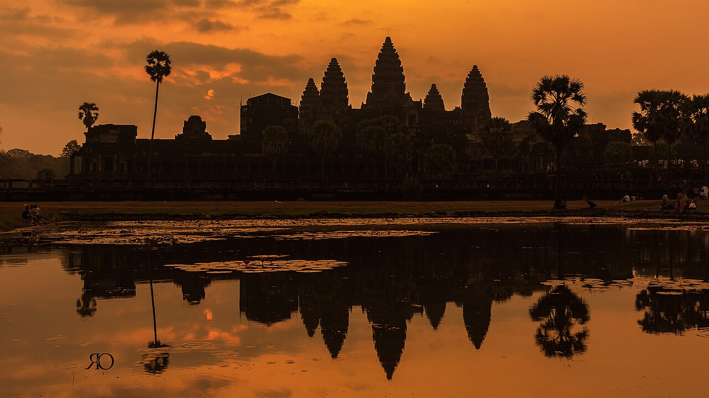

ការរស់ឡើងវិញ
អង្គរត្រូវបានចុះបញ្ជីដោយយូណេស្កូ។ អ្នករបាំត្រឡប់មកឆាកវិញ។ វប្បធម៌រស់នៅ — អត់ធ្មត់ ភ្លឺស្វាង មិនដាច់។
យូណេស្កូ
នៅឆ្នាំ ១៩៩២ អង្គរត្រូវបានចុះក្នុងបញ្ជីបេតិកភណ្ឌពិភពលោករបស់យូណេស្កូ — ដំបូងឡើយស្ថិតក្នុងបញ្ជីគ្រោះថ្នាក់ ហើយត្រូវបានដកចេញនៅឆ្នាំ ២០០៤ បន្ទាប់ពីកិច្ចខិតខំប្រឹងប្រែងអភិរក្សដ៏ធំធេង។
អាជ្ញាធរអប្សរា យូណេស្កូ មូលនិធិវិមានពិភពលោក (WMF) និងក្រុមអន្តរជាតិជាច្រើន បានបន្តការស្តារ និងការសិក្សា។
ទីក្រុងដែលលាក់កំបាំង
នៅឆ្នាំ ២០១២ ការស្ទាបស្ទង់ដោយប្រើបច្ចេកវិទ្យាលីដារ បានបង្ហាញអ្វីដែលលាក់កំបាំងក្រោមព្រៃ៖ អង្គរមិនមែនគ្រាន់តែជាប្រាសាទទេ — វាជា «ទីក្រុងធារាសាស្ត្រ» ដ៏ធំល្វឹងល្វើយ ដែលមានប្រព័ន្ធប្រឡាយ អាងស្តុកទឹក និងផ្លូវ គាំទ្រប្រជាជនប្រហែលមួយលាននាក់ — ជាទីក្រុងធំជាងគេបំផុតក្នុងពិភពលោកមុនសម័យឧស្សាហកម្ម។
អង្គរ នៅតែបន្តបង្ហាញអាថ៌កំបាំងថ្មីៗ ដល់អ្នកស្រាវជ្រាវជំនាន់ក្រោយ។
បេតិកភណ្ឌរស់
ពីឆ្នាំ ២០០៨ ដល់ ២០២៤ បេតិកភណ្ឌអរូបីចំនួនប្រាំពីររបស់ខ្មែរ ត្រូវបានចុះក្នុងបញ្ជីយូណេស្កូ៖ របាំព្រះរាជទ្រព្យ ល្ខោនស្រមោលស្បែកធំ ពិធីទាញព្រ័ត្រ ចាប៉ីដងវែង ល្ខោនខោល គុនល្បុក្កតោ និងក្រមា។ នៅឆ្នាំ ២០២៥ ទីតាំងអនុស្សាវរីយ៍កម្ពុជា ត្រូវបានចុះក្នុងបញ្ជីបេតិកភណ្ឌពិភពលោក។
វប្បធម៌ខ្មែរ រស់នៅ — អត់ធ្មត់ ភ្លឺស្វាង មិនដាច់។ ដំណើរបន្តទៅមុខទៀត។